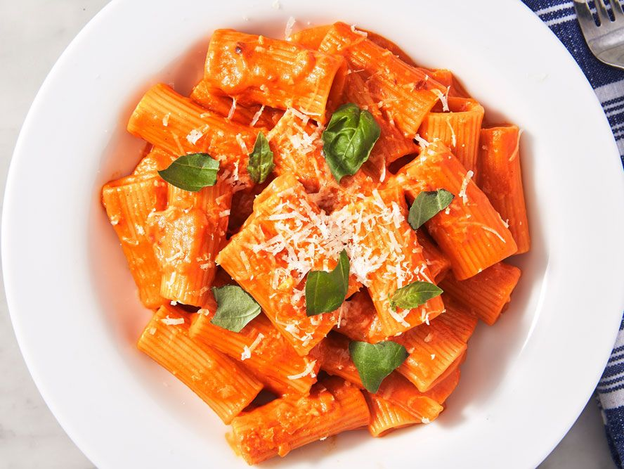

Pasta Alla Vodka

A delicious and creamy tomato based pasta dish
Pasta alla vodka is a dish that puts most of the emphasis on the
creamy and tasty tomato sauce. In my personal experience it is best
when made with tomato paste with vodka to help keep the sauce thick
and flavorful. Using a variety of ingredients ranging from butter,
heavy cream, onions, and red pepper to name a few, this dish is very
vibrant and can be adjusted to be more rich or have a bit of heat if
you would like.
Ingredients
- ~1lb pasta of your choice
- 1 whole onion, chopped finely
- 2 or 3 cloves of garlic, smashed and chopped
- 1 can of tomato paste
- 2 tbsp of butter
- 2 tbsp of olive oil
- 2 shots of vodka(I like grey goose myself)
- a pinch of red pepper flakes
- ~1 cup of heavy cream
- about a 1/4 tsp of salt, add more to taste
- Freshly ground black pepper, to taste
- Grated parmesan cheese
Steps
- Cook pasta according to box directions.
- In a large saucepan over medium heat, add the butter and
olive oil. Once the butter has melted you can add the
chopped onion and garlic, stirring and letting it cook
for about 2 minutes. After that add the vodka, stir for
another 2 minutes, then add the tomato paste and stir it in.
- Reduce head to low and add the heavy cream, stirring it in.
Let simmer, then add the salt, pepper, and red pepper flakes to taste.
- Drain the pasta, then add to the sauce, stirring to mix. Add water
if sauce is a bit too thick, and stir in some parmesen cheese.
- Serve, add more parmesan as needed.
Back